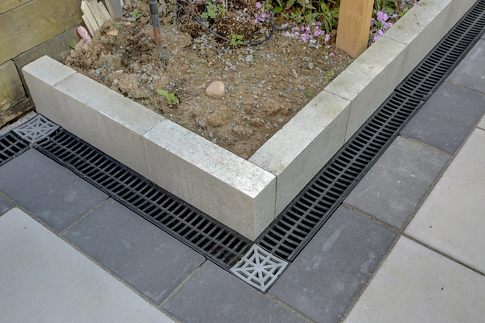

A successful backyard renovation begins below the surface. Before installing new interlocking, sod, artificial grass, fencing, garden beds, patios, or outdoor living features, homeowners should understand how water moves through the property.
Water pooling may appear to be a minor inconvenience, but it can cause larger problems over time. Poor drainage can create muddy grass, unstable soil, sinking pavers, damaged plants, weakened fence posts, slippery winter surfaces, and moisture near the home's foundation.
Landscaping should not simply cover an existing drainage problem. The cause of the water issue should be identified and addressed before new materials are installed. Proper grading and drainage help protect the investment and allow the finished outdoor space to perform better throughout the year.
For GTA homeowners, this is especially important because outdoor areas must handle heavy rain, snow, spring thaw, and repeated freezing and thawing.
Common Signs of Backyard Drainage Problems
Drainage problems are not always obvious during dry weather. They often become noticeable after a storm, during spring thaw, or after snow begins to melt.
Common warning signs include:
- standing water after rainfall
- soggy or muddy grass
- water collecting beside the house
- moss or algae growing on shaded surfaces
- sinking or uneven interlocking
- damaged garden beds
- washed-away mulch or soil
- water collecting near fence posts
- slippery ice buildup during winter
- downspouts emptying into low areas
- patches of grass that remain wet longer than the rest of the yard
- soil erosion around patios or walkways
A small puddle that disappears quickly may not indicate a serious issue. However, water that remains for many hours or returns repeatedly should be investigated.
The location of the water can provide clues. Pooling near the foundation may point to grading or downspout problems. Water beside a patio may indicate that the surface slope is incorrect. Soggy grass in the centre of the yard may be caused by compacted soil or a low point.
Why Water Pools in GTA Backyards
Water pooling usually results from a combination of surface elevation, soil conditions, drainage routes, and nearby structures.
Possible causes include:
- poor grading
- low areas in the yard
- clay-heavy soil
- compacted soil
- blocked drainage paths
- downspouts ending too close to the house
- runoff from neighbouring properties
- improperly installed patios
- sinking interlocking
- retaining walls without adequate drainage
- previous landscaping changes
- buried construction debris
- damaged drainage pipes
- insufficient outlets for surface water
Many GTA properties contain clay-rich soil. Clay absorbs water slowly and can remain saturated after heavy rainfall. If the yard is also flat or contains low areas, water may have nowhere to go.
Construction and landscaping work can also change water movement. A new patio, walkway, shed, or retaining wall may redirect runoff into another part of the property. This is why drainage should be evaluated as part of the full outdoor layout.
Why Drainage Should Be Fixed Before Landscaping
New landscaping may look beautiful when it is first completed, but underlying water problems can quickly affect the result.
Poor drainage can cause:
- sod roots to remain overly wet
- artificial grass bases to hold water
- plants to develop root problems
- soil to wash away
- pavers to sink
- patio edges to separate
- fence posts to shift or rot
- retaining walls to experience excess pressure
- winter ice to form in walkways
- outdoor surfaces to become uneven
Installing new materials without correcting drainage can make future repairs more expensive. The new patio, lawn, or garden may need to be removed before the original water problem can be addressed.
Drainage and grading should therefore be treated as part of the foundation of the project, not as an optional finishing detail.
Understanding Grading and Slope
Grading refers to shaping the land so water flows in a controlled direction.
In most residential situations, the ground near the house should slope away from the foundation. The rest of the yard should direct water toward an appropriate drainage area without sending it onto neighbouring properties.
Even a small elevation difference can affect where water collects. A surface that looks flat may contain enough variation to create a low spot.
A grading assessment should consider:
- the elevation around the foundation
- the slope of the lawn
- patio and walkway heights
- fence lines
- neighbouring properties
- downspout locations
- retaining walls
- garden beds
- existing drains
- where water currently enters and leaves the yard
The goal is not always to create a steep slope. The goal is to establish a consistent path that allows water to move safely.
Grading must also work with the intended landscape design. A new patio should not block the natural drainage route. Raised garden beds should not trap water against a fence or structure. New sod should follow a smooth grade without creating depressions.
Downspouts and Roof Runoff
A roof can direct a significant amount of water into the yard during a storm. If downspouts discharge too close to the foundation or into a low area, they may contribute to pooling.
Homeowners should check whether downspouts:
- end directly beside the house
- discharge onto interlocking
- empty into garden beds
- point toward a neighbour
- connect to damaged underground extensions
- are blocked by leaves or debris
- create erosion in the soil
- discharge into an already wet area
Depending on the property, downspouts may need extensions, splash blocks, buried pipes, or another suitable drainage route.
Water should not be directed onto neighbouring properties, public walkways, or areas where it can create hazards. Any solution should consider the complete site rather than simply moving the problem a few metres away.
Drainage Under Interlocking and Patios
Interlocking and patios need a properly prepared base and a planned surface slope.
A durable installation generally requires:
- proper excavation
- suitable aggregate material
- compaction in layers
- a stable bedding layer
- controlled grading
- edge restraints
- drainage planning
- correct final elevation
If the base remains saturated, it can lose stability. This may lead to sinking, movement, uneven pavers, separated edges, or low areas where water collects.
The patio surface should also guide water away from the house and other sensitive areas. This does not mean the patio should look noticeably sloped. A carefully planned grade can move water while still appearing level.
Drainage channels may be used where water needs to be collected along the edge of a patio, garden bed, entrance, or structure. These systems should lead to an appropriate outlet.

French Drains and Other Drainage Solutions
Different properties require different solutions. There is no single drainage system that works for every backyard.
Possible solutions may include:
- regrading
- French drains
- catch basins
- channel drains
- swales
- downspout extensions
- buried drainage pipes
- dry wells where appropriate
- permeable surfaces
- improved soil
- corrected patio slopes
A French drain generally uses a perforated pipe surrounded by drainage stone to collect and redirect water below the surface. It may be useful where water moves through the soil or collects along a defined route.
A catch basin collects surface water at a low point and connects to an outlet pipe. Channel drains are often used beside patios, driveways, walkways, entrances, or other hard surfaces.
A swale is a shallow landscaped depression that directs water through the yard. In some cases, simply correcting the grade may be more appropriate than installing a drain.
The correct solution depends on:
- the source of the water
- soil conditions
- yard elevation
- available outlets
- neighbouring properties
- local requirements
- planned landscaping
- the amount of runoff
A drainage feature should have a clear and appropriate discharge location. Installing a drain without a proper outlet may not solve the problem.
Soil Conditions and Compaction
Soil affects how quickly water can enter the ground.
Clay-rich soil drains slowly. Compacted construction soil may also prevent water from being absorbed. In these conditions, adding a small amount of topsoil may improve the surface but will not necessarily fix the deeper drainage problem.
Soil assessment may involve:
- checking the depth of topsoil
- identifying compacted areas
- reviewing clay content
- observing how quickly water disappears
- checking for buried construction materials
- examining root development
- identifying low areas
Depending on the project, the solution may involve soil removal, new material, drainage layers, aeration, grading, or a combination of approaches.
Proper soil preparation is especially important before sod installation and planting.
Drainage and Sod Installation
Sod needs moisture to establish roots, but it should not remain in standing water.
A successful sod installation requires:
- properly prepared soil
- smooth grading
- adequate topsoil
- consistent watering
- good soil contact
- controlled drainage
If the lawn contains low spots, some areas may remain wet while other areas dry too quickly. This can lead to uneven growth, weak roots, fungal issues, mud, and damaged grass.
Existing drainage issues should be corrected before sod is installed. Otherwise, the new lawn may hide the problem temporarily without solving it.
The watering schedule should also be adjusted based on weather, soil, and drainage. Overwatering a poorly draining yard may make the situation worse.
Drainage and Artificial Grass
Artificial grass still requires drainage.
A proper artificial turf installation generally includes:
- excavation
- removal of unsuitable soil
- a compacted aggregate base
- grading
- drainage planning
- turf installation
- seams and edge finishing
- infill where appropriate
Artificial grass should not be laid directly over poorly draining soil without preparation. Water needs to move through the turf and into the base below.
Low spots can collect water and create odour concerns, especially in pet areas. Proper drainage is essential for rinsing and maintaining artificial grass used by pets.
The surrounding landscape should also be considered. Water from patios, roofs, or neighbouring areas should not be directed into the turf without a suitable path.
Drainage Near Fences and Retaining Walls
Wet soil can affect fence posts and retaining structures.
Wooden posts exposed to constantly saturated soil may deteriorate more quickly. Seasonal soil movement can also cause posts to lean or shift.
Water collecting behind a retaining wall can create pressure. Proper wall construction may require:
- drainage stone
- filter fabric
- outlet pipes
- suitable backfill
- controlled surface grading
Garden beds placed along fences or retaining walls should not block existing drainage routes.
When planning a fence, wall, or raised planting area, the contractor should consider how the feature will affect water movement through the yard.
Winter and Freeze-Thaw Concerns
Drainage problems can become more noticeable during winter.
Standing water may freeze and create:
- slippery patios
- icy walkways
- damaged steps
- frost movement
- lifted or shifted pavers
- unsafe entrances
- saturated soil during spring thaw
Water below outdoor surfaces can freeze, expand, and contribute to movement. Repeated freezing and thawing may worsen small installation problems over time.
A drainage system should therefore be planned for all seasons, not only summer rain.
Snow storage should also be considered. Large piles of snow eventually melt, and the water needs a safe route through the property.
When to Call a Contractor
A professional assessment may be helpful when:
- water remains for more than a day after rain
- pooling occurs near the foundation
- the basement shows signs of moisture
- interlocking is sinking
- several parts of the yard remain wet
- a retaining wall is involved
- the source of the water is unclear
- the problem returns after simple changes
- a major landscaping project is planned
- runoff may affect neighbouring properties
The contractor should inspect the property during site planning and explain how drainage will be handled.
For more complex foundation or structural concerns, additional professional assessment may be appropriate.
Questions to Ask Before Starting Landscaping
Before approving a new outdoor project, ask:
- Where does water currently flow?
- Are there visible low points?
- Does water collect near the house?
- Are downspouts directed properly?
- Will the new patio change runoff?
- Does the yard need regrading?
- Is a catch basin or channel drain needed?
- Where will collected water discharge?
- Will the work affect neighbouring properties?
- How will the base be prepared?
- How will winter runoff be managed?
- What drainage work is included in the estimate?
These questions help ensure the visible design and the underlying site conditions are planned together.
Final Thoughts
Drainage is one of the most important parts of a successful outdoor renovation.
New sod, artificial grass, interlocking, fencing, patios, and landscaping should not be installed over an unresolved water problem. Proper grading and drainage help protect outdoor materials, plants, structures, and the home itself.
The right solution depends on the property. Some yards may only need corrected downspouts or minor grading. Others may require channel drains, catch basins, French drains, soil improvements, or a combination of methods.
Greatland Construction provides backyard grading, drainage improvements, interlocking, patios, sod installation, artificial grass, fencing, landscaping, and complete outdoor renovation services across the GTA.